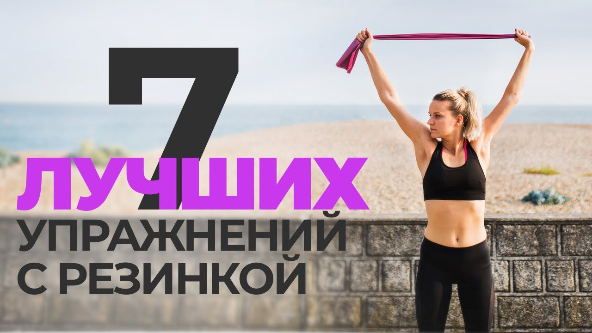
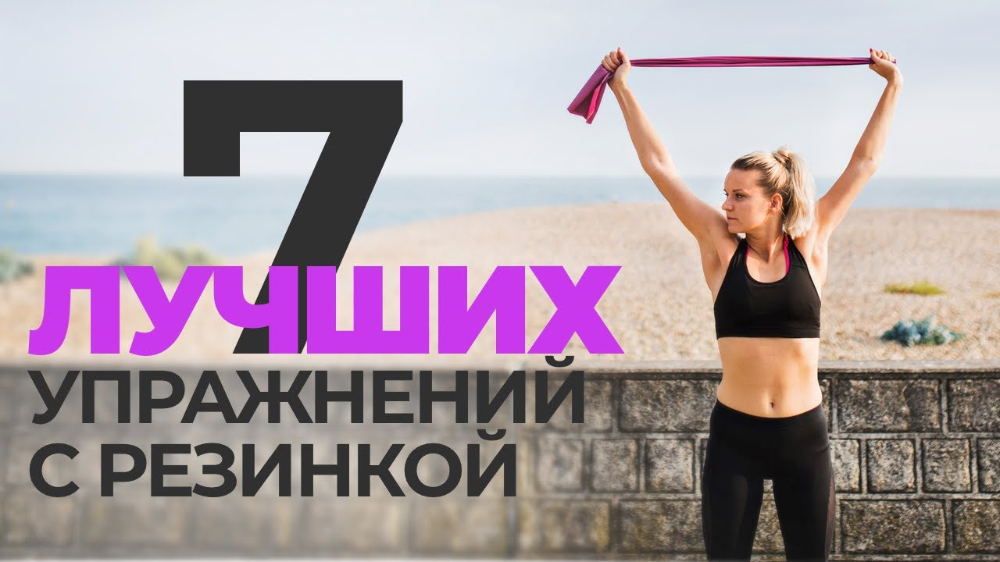

Фитнес - 72 статии | Ezine.bg
2020.09.15 13:58

Мрежата Статии Рецепти Истории Игра Съновник 1 Вход ezine.bg » Статии » Спорт и Диети » Фитнес PR Публикации Диети Здравословно Хранене Йога Тренировки Фитнес
Фитнес
Фитнес съвети и практики от Ezine.bg. Съвети твоя фитнес. Програми за фитнес тренировки за малки и големи. Фитнес Топ 10 ползи от редовното правене на упражнения 26 Юни Кремена Рикова Фитнес Народните танци - по-добрият заместител на фитнеса! 24 Ноем. Кристина Черникова Фитнес Кои мускули тренират лицевите опори? 20 Окт. Криси Красимирова Facebook Любими Twitter PinterestФитнес упражненията изморяват както мускулите, така и мозъка 12 Окт. Илияна Ангелова Активно спортуващите чувстват и мозъчна умора, не само физическа. Това се отразява негативно на способността да се взимат правилни решения и да се мисли рационално. Тъмната страна на тренировките 23 Август Петьо Любомиров Могат ли упражненията не само да ви поддържат във форма и слаби, но и да ви разболеят и да ви прилошее от тях? Да, това поне показва ново изледване. Спортове за работещи момичета 22 Юли Кристина Великова Да си независимо и работещо момиче в днешно време не е лесно. Вижте 3 спорта, подходящи за работещи момичета: Ако искаш да отслабнеш, спазвай тези 6 правила 28 Юни Хриси Сюлемезова Вечният въпрос – как да отслабнем, вече има отговор, благодарение на известната диетоложка Клеър Барнс. Тя споделя няколко прости съвета за бързо отслабване. Семената – здравословният дар от природата, който трябва да ядем ежедневно 01 Април Петьо Любомиров Семената са един от даровете на природата, за които всички трябва да сме благодарни. Те са един от най-големите източници на фибри. Ето кои са най-полезните семена. Колко течности да пием преди, по време и след фитнес? 16 Януари Илияна Ангелова За доброто здраве от първостепенна важност е поддържането на добър воден баланс в тялото. Колко течности да пием преди, по време и след фитнес? 7 причини да вдигаш тежести 06 Дек. Хриси Сюлемезова Вдигането на тежести е този труден път, който ще повлия не само на фигурата, но и на характера ви. Какви са ползите от вдигане на тежести? 3 погрешни вярвания за фитнеса, с които трябва да се разделите 22 Септ. Антония Р. Упражненията във фитнес залата преобразяват тялото, но не всичко, което сте чували и чели за този вид тренировки е вярно. В галерията ни може да видите 3 погрешни вярвания за фитнеса. Най-евтините и ефикасни фитнес играчки за дома 05 Май Кристина Черникова Не е нужно да давате стотици левове за фитнес карта всеки месец. И сами можете да обзаведете дома си с играчки за спорт, при това на много тънка цена. Ползите от вдигането на гирички при жените 28 Април Елиана Василева Всяка жена обича да позира пред огледалото. Случвало ли ви се е обаче, докато се наслаждавате на своето отражение, повдигайки кокетно ръце, да се изплащите от провиснала от тях кожа? Не се тревожете - поправимо е, нужна ви е само малко повечко воля. Ще си 1 2 3 4 > > |
Избрано
‹ › Мускули и Фитнес Фитнес Упражнения за ДупеОт категорията
‹ › Диетата на Емилия сваля скоростно килограми Това са спортовете, които горят най-много калории Храни за подобряване на паметта Храна за всеки орган – кои са приятелите на тялото ни Българските звезди слабеят ударно! Ето как Кога е идеалното време за събуждане, хапване и тренировки Кактусът – най-новата суперхрана! 1Нашите категории рецепти
7 177 Рецепти Салати Предястия Зеленчукови ястия Ястия с Яйца Основни Ястия Гарнитури Пица Паста Морски Дарове Сладка Туршии и зимнина 1 544 Супи Студени супи Крем Супи Чорби и супи 4 331 Ястия с Месо Риба Колбаси Карантия Кайма Дивеч Пуешко месо Гъше Месо Патешко месо Заешко месо Агнешко месо Телешко месо Пилешко месо Свинско месо 3 617 Десерти Сладолед Кремове Други Десерти Тестени десерти Бутер Тесто Торти и глазури Мъфини Сладки и Бисквити Сладкиши 3 271 Други Алкохол Коктейли Напитки Бебешки Храни Рецепти за Здраве Снакс Закуски Палачинки Хляб и питки Баница Сосове Сандвичи Още Категории Интернационална Кухня Начин на Обработка По Продукт Празнична Кухня Сборни Категории Сезонна Кухня Степен на Трудност Тип Кухня Тип Рецепти Пиар Реклама Най-новото Контакти Защо да се регистрирам Участвай и ПечелиПопулярно
Симптоми при висок холестерол 20 Април 10 Опасни за кучетата стайни растения 14 Септ. 17 храни, които борят косопада ударно 09 Май Ултразвукова четка за зъби - какво трябва да знаем 13 Септ. Изпражненията са показател за здравето ни 09 Април 4 Интуитивното хранене ви помага да сте по-слаби и по-здрави 04 Септ.Активни днес
Кристина Бонева Румяна Сакалийска Илияна Димова Кристиан Александров Анабел Viki_Afzali Анета Динева Maria Kostoff Elena Todorova Бъди красива, здрава и стилна с нашите съвети - защото ние го можем! Свържете се с нас: gradbg@gmail.com 2009 - 2020 © - Ezine.bg Общи Условия Поверителност Бисквитки- Фитнес храна | GymBeam.bg
- Фитнес & Кардио (аеробика) | Белчо Христов - Фитнес ...
- ЦЕНИ – Спортен клуб НЕО Фит
- Фитнес - За Жената
- Онлайн магазин Top Sport - всичко за фитнеса, фитнес уреди ...
- Хранителни добавки, Секс Стимуланти, Фитнес храни, Парфюми ...
- Genezis | Спортно облекло, Фитнес дрехи, Тениски, Потници ...
- FITNES-BG.COM - Фитнес
- Фитнес център "NordGym"
- Спортен клуб НЕО Фит – Спортен клуб
- Фитнес храна | GymBeam.bg
Магазин за вашето здраве, хранителни добавки за маса, отслабване, стимуланти, фитнес храни, хомеопатия, парфюми, натурлна козметика. Online доставка в страната
- Фитнес & Кардио (аеробика) | Белчо Христов - Фитнес ...
Фитнес зала Съвременни уреди, натоварващи всички мускулни групи. 2 Солариум За Вашия перфектен тен.
- ЦЕНИ – Спортен клуб НЕО Фит
Тренирай кратко вкъщи, хапвай вкусно и се радвай на живота с Руми Илиева, сертифициран фитнес инструктор.
- Фитнес - За Жената
Фитнес гривна Mi Band 4 от Xiaomi е с цветен 120 х 240 пиксела AMOLED дисплей, като производителя запази същия дизайн на Mi Band 3. Каишката на гривната може да се сваля, за да се смени с друг цвят по ваш избор.
- Онлайн магазин Top Sport - всичко за фитнеса, фитнес уреди ...
УВАЖАЕМИ КЛИЕНТИ, От 18.05.2020 нашият фитнес център ще бъде отворен отново при прилагане указанията на Министерството на маладежта и спорта. С конкретните мерки може да се запознаете...
- Хранителни добавки, Секс Стимуланти, Фитнес храни, Парфюми ...
фитнес БГ-Информация за фитнес, бодибилдинг, културизъм. Диети за отслабване и повишаване на мускулната маса. Хранителни добавки, медикаменти. Описание на фитнес упражнения и форум.
- Genezis | Спортно облекло, Фитнес дрехи, Тениски, Потници ...
ВСЕКИ КЛИЕНТ, КОЙТО ПОСЕЩАВА КЛУБА Е ЗАДЪЛЖЕН ДА НОСИ СЪС СЕБЕ СИ ЧИСТИ ОБУВКИ И КЪРПА!
- FITNES-BG.COM - Фитнес
Фитнес център Fitness Line е с площ от 800 м2, от които на 550 м2 са разположени 52 бр. силови уреди и 12 бр. кардио уреди. Производител на оборудването са двата най-утвърдени на световния пазар производителя – Precor и Technogym.
- Фитнес център "NordGym"
Pole Dance – фитнес на пилон Живеем в 21 век – времена на свобода във всяко отношение. Имаме избор да тренираме каквото и където си поискаме, без да бъдем ограничавани.
- Спортен клуб НЕО Фит – Спортен клуб
Карта фитнес 3месеца без ограничение 110лв. Солариум 6мин.(минимално) 4,80лв. Карта фитнес 6месеца без ограничение: 180лв. Фитнес + индивидуална тренровка с инструктор: 15 лв.
Магазин за вашето здраве, хранителни добавки за маса, отслабване, стимуланти, фитнес храни, хомеопатия, парфюми, натурлна козметика. Online доставка в страната
Фитнес зала Съвременни уреди, натоварващи всички мускулни групи. 2 Солариум За Вашия перфектен тен.
Тренирай кратко вкъщи, хапвай вкусно и се радвай на живота с Руми Илиева, сертифициран фитнес инструктор.
Фитнес гривна Mi Band 4 от Xiaomi е с цветен 120 х 240 пиксела AMOLED дисплей, като производителя запази същия дизайн на Mi Band 3. Каишката на гривната може да се сваля, за да се смени с друг цвят по ваш избор.
УВАЖАЕМИ КЛИЕНТИ, От 18.05.2020 нашият фитнес център ще бъде отворен отново при прилагане указанията на Министерството на маладежта и спорта. С конкретните мерки може да се запознаете...
фитнес БГ-Информация за фитнес, бодибилдинг, културизъм. Диети за отслабване и повишаване на мускулната маса. Хранителни добавки, медикаменти. Описание на фитнес упражнения и форум.
ВСЕКИ КЛИЕНТ, КОЙТО ПОСЕЩАВА КЛУБА Е ЗАДЪЛЖЕН ДА НОСИ СЪС СЕБЕ СИ ЧИСТИ ОБУВКИ И КЪРПА!
Фитнес център Fitness Line е с площ от 800 м2, от които на 550 м2 са разположени 52 бр. силови уреди и 12 бр. кардио уреди. Производител на оборудването са двата най-утвърдени на световния пазар производителя – Precor и Technogym.
Pole Dance – фитнес на пилон Живеем в 21 век – времена на свобода във всяко отношение. Имаме избор да тренираме каквото и където си поискаме, без да бъдем ограничавани.
Карта фитнес 3месеца без ограничение 110лв. Солариум 6мин.(минимално) 4,80лв. Карта фитнес 6месеца без ограничение: 180лв. Фитнес + индивидуална тренровка с инструктор: 15 лв.
 
